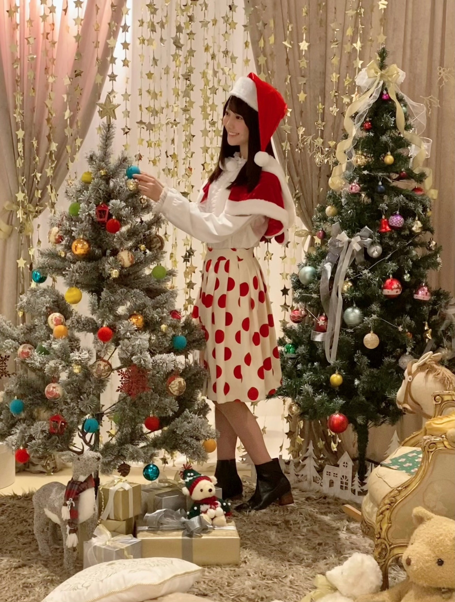

2020/1218Friサンタクローミ ☺︎ 黒見明香(16)
今年はサンタさん来るかなー？
毎日寒いけど... どうぞ頑張ってるあなたのとこに、
ココを見つけてくださり ありがとうございます♪
乃木坂46 ４期生の黒見明香です。
すこーしだけ自己紹介させてください☺︎
♪:*:･･:*:･･:*:･･:*:･･:*:･･:*:･♪:*:･･:*:･･:*:･･:*:･･:*:･･:*:･♪
黒見 明香（くろみ はるか）
2004年1月19日生まれ 16才
香港生まれ・東京都出身です
あだ名： くろみん・黒見ちゃん
3の倍数9・6・3(くろみ)
と覚えてもらえたら嬉しいです♪

【 乃木坂工事中 B級ニュース✨ 】
♪:*:･･:*:･･:*:･･:*:･･:*:･･:*:･♪:*:･･:*:･･:*:･･:*:･･:*:･･:*:･♪

⚫︎ヘルメットにカメラまで付けて、まるでお笑い芸人の体当たりロケのよう（笑）
⚫︎ちなみに私も自転車には乗れません。私を置いて行かないでください笑

読んでくださり、本当にありがとうございます☺︎
次回も、会えたら嬉しいなぁ✨
またねヾ(･ω･*)
くろみはるか☺︎
☆ 明日のあなたのラッキーナンバー：❸ と ❼
♪:*:･･:*:･･:*:･･:*:･･:*:･･:*:･♪:*:･･:*:･･:*:･･:*:･･:*:･･:*:･♪
・
・
・
＜ちょこっとアンコール♬笑＞
〜クロミ・ル・フィーユ〜
（クロ見るFeel YOU☺︎）
⚫︎クリスマス個別生写真見ました！緑のサンタさん、あの衣装の色はみんな決められたものを着ているんですか？もし、自分で緑を選んだのなら決め手を教えて欲しいです。
◯スタイリストさんマネージャーさんが選んでくださる時と、自分で選ばせていただく時があるのー！
⚫︎くろみんが真ん中から顔を覗かせたハート型オーナメント（ornament）はツリーに飾るのですか？
〇ドアにそのまま、リースの代わりに飾ってるよ〜！
♬ *。♩*。♬
⚫︎昨日早速「新解釈三国志」観に行ったんだ。三国志の武将では誰が好き？
◯良いですね〜すごく気になっています☺︎
君主の死後も、真っ直ぐ思いを持ち続けた、姜維さんが周瑜さんなどのエピソードに感動してしまいます〜
♬ *。♩*。♬
⚫︎お仕事頑張って。僕も「推し事」を頑張るねー
♬ *。♩*。♬
ジャルジャルさんのお勧め動画、サッカーの試合のお話も、花園行ったよなお話も、武術太極拳始めたよー!てお話も、銀河系エクレアのこと、しょっぱいカフェオレエピソード、ゲームぷよぷよ、ドラクエ5のこと、鬼滅の刃の漫画のこと、ヌンチャク式サイリウム話、蕁麻疹に虫除けしちゃったお話や、漢字の日の事、ふゆか話も、秋田の信号のお話、ドラマ危険なビーナス、35歳の少女、どんぶり委員長のこと、白毛馬のお話、ふたご座流星群見たよーや、8th BDブルーレイのお話も、目覚まし、雪遊びの頃、コンタクトや地雷メイクのリクエストも、チェキプレゼント祈願✨も、冬のデザートのお話も、沢山のコメント、本当にありがとう！
体調崩しちゃったよーて方も、寒さで声がガサガサだよ〜て方も、また足怪我しちゃったよー方も、(お大事にです><)、テストや面談、アルバイト、就活頑張ってる方も！最終列車まで頑張ったよーや京都出張だよー、体育持久走、ダイエット頑張ってるよーて方もファイトだよー！一緒に頑張ろうねー!!
Out of the blueラジオで聴いたよー、乃木フェスガチャ当たったよー！クリスマスカードGETしたよー！てお話も(嬉しいな☺︎ありがとう♡)、コメント反映されなくて、も一度がんばって書いたよー！て方も、前のブログに感想書いたよー！て方も(見たよー☺︎） ミーグリ増やしたよーや、いつの何部に行くよー(ありがとう、楽しみー!!) も、ワクワクしながら読ませていただいてるよ〜✨
アンダー楽曲やあの日 僕は咄嗟に噓をついたのこと、LiSAさん、Mrs.GREEN APPLEさん、Alexandrosさん、Novelbrightさん、SEKAI NO OWARIさん、大阪のNOAさんの曲、平井堅さん、サザンオールスターズさんの好きな曲や面白エピソード、米津玄師さんのお話、沢山の曲を教えてくれてありがとうヾ(･ω･*)o
頷いたり、驚いたりしながら読ませて頂いてるよー！送ってくれてありがとう (*ˊᵕˋ*)੭
そして、お誕生日を迎えるあなたへ・・
✨HAPPY BIRTHDAY✨
どうぞ素敵な一年になりますよう✩︎⡱
♪:*:･･:*:･･:*:･･:*:･･:*:･･:*:･♪:*:･･:*:･･:*:･･:*:･･:*:･･:*:･♪
ここまで読んでくださったアナタ、ほんとうにありがとう♡
またねヾ(･ω･*)
ホッとするあたたかい事が有りますように〜✨
金曜日だねー！今週もお疲れ様でした✩︎⡱
ココを見つけてくださり ありがとうございます♪
乃木坂46 ４期生の黒見明香です。
すこーしだけ自己紹介させてください☺︎
♪:*:･･:*:･･:*:･･:*:･･:*:･･:*:･♪:*:･･:*:･･:*:･･:*:･･:*:･･:*:･♪
黒見 明香（くろみ はるか）
2004年1月19日生まれ 16才
香港生まれ・東京都出身です
あだ名： くろみん・黒見ちゃん
3の倍数9・6・3(くろみ)
と覚えてもらえたら嬉しいです♪
頂いたコメントから↓
◎ 今まで貰ったクリスマスプレゼント、何が1番うれしかった？
お手紙ー (*ˊᵕˋ*)੭
小さい頃、夢の国で転んで怪我しちゃったことがあって...
そしたらクリスマスに、ねずみさんから
英語の「よくなりますように✨」っていう
おまじないのお手紙が届いたんだよ〜♬
わたしが泣いてたことも、頑張ってることも、、
知っててくれてるんだぁー...って ｡ﾟ(｡ﾉω＼｡)ﾟ｡
そんな"見ててくれる存在がいる"ことが
すごく嬉しくて、幼いながらにすごく印象に残ってるよ〜
＊
ここを読んでくださる大切なあなたからの
コメントやお手紙も、一番大切な宝物だよ((〃ω〃))
皆んなが大変な時や、しんどい時に、
あなたを応援する、そばで見守る存在になれるように...
少しでも元気や笑顔になれるように・・
憧れの先輩方を見習って、皆んなに教わって、
いっぱいいっぱい修行して、
頑張りたいなぁと思っています (*ˊᵕˋ*)੭✨フフ
♪:*:･･:*:･･:*:･･:*:･･:*:･･:*:･♪:*:･･:*:･･:*:･･:*:･･:*:･･:*:･♪

-:-:୨୧:-:- 乃木坂46リズムフェスティバルでも「Xmasキャンペーン」中だよ〜✨サンタクローミになってあなたのとこに行きたいな♡笑
⚫︎クリスマスのプレゼントは何もらいますか？小さい頃はサンタさんから何もらってましたか？？
小学生の頃、サンタクロースさんに
『願いが叶うステッキ（自分で描いた図解入り）』が
欲しいというお手紙を書きました。
いつも"世の中に無い"オリジナルなものを頼むので
サンタさんは悩んでいたようです・・・笑
サンタさんからのお手紙はココ☺︎笑↓
⚫︎ひとりでクリスマスを過ごす予定...淋しいよ〜
⚫︎コロナが流行ってるし友達とビデオ通話しながらご飯食べるかしたいなぁって思ってる！
皆んなが集まって楽しそうだと
寂しくなっちゃうよね><
ビデオ通話、素敵なアイディアだねー(*´-`)✨
クリスマスの日も、あなたとオンライン ミート＆グリート等出来たら良いのになぁ...て思っちゃったりするけれど、
少しでも楽しく、ホッとできるように...
わたしも皆んなのコメントやお手紙読んだり、
ブログ(お手紙)書いたりするね (*ˊᵕˋ*)੭♪
♬ *。♩*。♬
⚫︎ クリスマスと言えばケーキだけど、くろみんはどんなケーキが好き？？
クリスマスケーキは、上に乗ってる
クリスマスケーキは、上に乗ってる
お菓子の家（伝わるかなぁ...伝われ〜 (. ≧ω≦)ﾉ）が好きで、
あのお家の部分を食べていたよー☺︎笑
フルーツが好きー！ 皆んなの定番はイチゴ？チョコ？
ブッシュ・ド・ノエルとか作るのかなぁ。。？
スポンジ焼いて、生クリームのいちごのケーキは作ったことがあるよー！
⚫︎プレゼントを貰う側からあげる側になると、サンタクロースは本当にいるって分かるよ〜。そう感じるんだな。考えるな、感じろ！みたいな(笑)
深い・・・哲学的なアドバイスですね✨
乃木坂を囲んでくださる、大切な皆んなに会えたから、
サンタクロースはきっと。。。いてほしいなぁ...って信じたいです♡
「考えるな！感じろ」ですね☺︎笑
♬ *。♩*。♬
＊プチ情報＊
⚫︎Googleでクリスマスって調べて、サンタさんの帽子マークをタップすると、ゲームができるようになってるよ！
みんな知ってるのかな〜？私は初めて知ったよ〜！
楽しい情報、教えてくれてありがとうー (*ˊᵕˋ*)੭✨
♪:*:･･:*:･･:*:･･:*:･･:*:･･:*:･♪:*:･･:*:･･:*:･･:*:･･:*:･･:*:･♪
-:-:୨୧:-:- 今週のノギザカスキッツ、"アメリカンパーティー"がテーマで、メンバーそれぞれコーディネイト✨カチューシャしてみたよ〜✩︎⡱
【 しりとれ！HIP CATCH PARTY！② 】
⚫︎マチソワカン」では踊っていました、ノリノリ笑
あれは、難しい...にんじんジュースしか思い付きません
ねー！本編では"成功"で終えられたのですが・・・
しりとりはなかなかムズカシイデスネ( ´_ゝ`)
またいろんな言葉、覚えて、強くなって再チャレンジしたいです！笑
岩本蓮加さん♡カッコ良かったですね☺︎
⚫︎順番待ちでくるくる回ってる時のくろみんが、凄い楽しそうで好きです!
⚫︎編み込んであって、後ろから見ると形がハートみたいで可愛かった
⚫︎編み込んであって、後ろから見ると形がハートみたいで可愛かった
気付いて下さりありがとうございます✨！
モルックの絵が飾ってあったり、すごく拘ってくださっているので、もし良かったら細かいところも見てみてくださいねヾ(･ω･*)o
『ヒップキャッチパーリィィィ!!』(by DJ森田さん)
感が出たらいいなぁ。。と終始ノリノリになってみたよ〜笑
また、次回のスキッツも楽しみですね〜！
【 乃木坂工事中 B級ニュース✨ 】
⚫︎最近の年末定番企画になってるB級ニュースはやっぱり面白いね。
⚫︎くろみんにとっての今年のB級ニュースは何ですか？
⚫︎くろみんにとっての今年のB級ニュースは何ですか？
毎年最高ですよねー！
「もうこの季節なんだなぁ...」って感じますよね♬
次回、来年の抱負と共に発表できるかな！？
アホあほな黒歴史も増えているので、
５日後楽しみに？待っててね (*ˊᵕˋ*)੭ 笑
-:-:୨୧:-:- 明日夜 22時〜放送だよ〜((〃ω〃)) 初めての自転車に七転八起・・・Σ（ﾟдﾟll）汗
【 乃木坂46山崎怜奈とおはつちゃん
＃17 『自転車に乗りたい！』 】
いよいよ＜明日12月19日夜 22:00〜＞
ひかりTV ・dtvチャンネルさんで、
初めてのチャレンジが放送予定です。
＊
⚫︎くろみんの乃木坂ジャージ姿って初公開かな？
そうなのですー！
実は、初めての「乃木ジャー」で、
名前が入ってることに感動していました。
・・・も束の間・・・
⚫︎ヘルメットにカメラまで付けて、まるでお笑い芸人の体当たりロケのよう（笑）
体当たりでした〜 (*ˊᵕˋ*)੭ふふ
寺田蘭世さん♡が乃木坂工事中で
チャレンジされていらした姿を思い出しながら、
初めてのロケ、初めての出演・・・
全力で戦ってみましたー\(//∇//)\恥ずかしい...
⚫︎ちなみに私も自転車には乗れません。私を置いて行かないでください笑
コツや、こんな新しい方法が！？という体験もしたので、
良かったら、一緒に頑張ろうねー ( . ≧ω≦)ﾉ
⚫︎流石にこの年齢になって乗れないのは恥ずかしいから番組できっと乗れてるだろうなぁーと思って楽しみにしてます笑 できてるよね？笑
えーと・・・・
楽しみにしててくださいね\(//∇//)\ドキドキ汗
明日ぜひ！良かったら笑いあり、涙あり！？♬
♪:*:･･:*:･･:*:･･:*:･･:*:･･:*:･♪:*:･･:*:･･:*:･･:*:･･:*:･･:*:･♪
-:-:୨୧:-:- 続・ 発売中の「週刊ヤングマガジンNo.2・3号」さまのオフショット、アホな写真シリーズだよ〜\(//∇//)\笑
⚫︎沢山のオフショット頂戴！本当に雑誌に載ってる写真は少なすぎて勿体ないよ〜
リクエストありがとう〜☺︎
実は・・・マネージャーさんと、待ち時間にパーカーで遊んでみたり、
この格好で、ブルース・リーさんのモノマネを撮ったりしていました(*´-`)
そんなオフショットの一コマです笑
あたたかい雰囲気で、リラックスさせてくださって
自然な表情を撮ってくださる皆さまに心から感謝しています✨
【 オンライン ミート＆グリート♡（個別トーク会）】
⚫︎今日は子供が櫻の新２期生のメンバーとミーグリしてたの。リラックスして素の姿が見られたって喜んでました。
⚫︎63歳ですが、初めてトークできるのが楽しみです。よろしくお願いします。
⚫︎63歳ですが、初めてトークできるのが楽しみです。よろしくお願いします。
大切な皆んなとお話しできるの、本当に楽しみです!!
今から、すごく心待ちにしていますー (*ˊᵕˋ*)੭
⚫︎らじらーで開発した「クロミーアキャット」や「くろみにゃん」や「くろみんpossible」
などの必殺技の使用も楽しみにしています。
⚫︎くろみんの照負倶楽部も見たかったなー。ミーグリでリクエストしてもいいですか？（笑）
などの必殺技の使用も楽しみにしています。
⚫︎くろみんの照負倶楽部も見たかったなー。ミーグリでリクエストしてもいいですか？（笑）
もちろんだよー！
必殺技の練習も☺︎笑、洋服も、髪型も、ウインクの練習も
楽しみでいっぱいしてるので、どうぞ気軽に
ちょこっと覗きに来てくれたら嬉しいなヾ(･ω･*)o
会えるのを、すごく楽しみにしています♡
♬ *。♩*。♬
【乃木坂46 アンダーライブ 2020✩︎⡱ 】
♬ *。♩*。♬
【乃木坂46 アンダーライブ 2020✩︎⡱ 】
いよいよ今夜から！！
⚫︎久しぶりだから、サイリウムの光を見ただけで感動しそうな気がする...寒いけれど、心は熱く、スティックバルーンで応援します(*'ω')
⚫︎次は観客の前でパフォーマンスできるといいね。その時は同じ空間に入れるといいなぁ。
ワクワクしますね！
ついに、先輩方も、皆んなの姿・応援に大きなパワーを貰ってらっしゃることと思います✩︎⡱ どうぞ楽しんでくださいねー！（皆んなと会える一歩だと願って✨）
オンライン組も、もちろん！いよいよスタートですね♬
① 12月18日(金) 開場 16:30 ／ 開演 18:00 《ライブ配信予定》
② 12月19日(土) 開場 16:30 ／ 開演 18:00 《ライブ配信予定》
③ 12月20日(日) 開場 16:30 ／ 開演 18:00 《ライブ配信予定》
わたしも観ますよー!!『熱いアンダーライブ』
一緒に盛り上がりましょうね〜 (*ˊᵕˋ*)੭
♪:*:･･:*:･･:*:･･:*:･･:*:･･:*:･♪:*:･･:*:･･:*:･･:*:･･:*:･･:*:･♪
ブログやお手紙で、たくさんのコメントや感想送って下さり
本当にありがとうございます✩︎⡱
初めてブログ読んでコメントしたよー！というあなたも、
何回目のコメントだよー！と教えてくださるあなたも、
大切な時間を使ってお話しして下さり
本当にありがとうございます✨
あなたに出逢えた奇跡に、感謝しながら、
大事に、一つずつ全部読ませて頂いています((〃ω〃))
皆さんのことを知ることが出来る、
私の１日の中で『１番幸せな時間』です♩
いよいよ１月から！初めての個別トーク会で、
直接お話しできる時が、 今からとっても待ち遠しいです✩︎⡱
＊
ブログやお手紙で、たくさんのコメントや感想送って下さり
本当にありがとうございます✩︎⡱
初めてブログ読んでコメントしたよー！というあなたも、
何回目のコメントだよー！と教えてくださるあなたも、
大切な時間を使ってお話しして下さり
本当にありがとうございます✨
あなたに出逢えた奇跡に、感謝しながら、
大事に、一つずつ全部読ませて頂いています((〃ω〃))
皆さんのことを知ることが出来る、
私の１日の中で『１番幸せな時間』です♩
いよいよ１月から！初めての個別トーク会で、
直接お話しできる時が、 今からとっても待ち遠しいです✩︎⡱
＊
大雪で大変な地域の方、どうぞくれぐれも身体を大事に
気をつけてくださいねー！
いよいよ年末が近付いてきて、仕事や勉強が忙しかったり、
なんだか体調イマイチだよー、疲れちゃったよーって方も
本当に、お疲れ様でした✩︎⡱
きっと心も、身体も、しんどい時もあるかと思います。。
どうぞ、皆さんが 少しでも
ひとときリラックスできますように...✩︎⡱
と願っています(*´-`)
初めて会える日を、楽しみに待っています♪
＊
明日は、笑顔も大好きな璃果ちゃんですよ〜♬
いよいよ年末が近付いてきて、仕事や勉強が忙しかったり、
なんだか体調イマイチだよー、疲れちゃったよーって方も
本当に、お疲れ様でした✩︎⡱
きっと心も、身体も、しんどい時もあるかと思います。。
どうぞ、皆さんが 少しでも
ひとときリラックスできますように...✩︎⡱
と願っています(*´-`)
初めて会える日を、楽しみに待っています♪
＊
明日は、笑顔も大好きな璃果ちゃんですよ〜♬
読んでくださり、本当にありがとうございます☺︎
次回も、会えたら嬉しいなぁ✨
またねヾ(･ω･*)
くろみはるか☺︎
☆ 明日のあなたのラッキーナンバー：❸ と ❼
♪:*:･･:*:･･:*:･･:*:･･:*:･･:*:･♪:*:･･:*:･･:*:･･:*:･･:*:･･:*:･♪
・
・
・
＜ちょこっとアンコール♬笑＞
〜クロミ・ル・フィーユ〜
（クロ見るFeel YOU☺︎）
本編が長くなってしまったので、
沢山いただいた質問は次回答えさせてね！
５日だけ待っててねっ (*ˊᵕˋ*)੭✨
♬ *。♩*。♬
⚫︎クリスマス個別生写真見ました！緑のサンタさん、あの衣装の色はみんな決められたものを着ているんですか？もし、自分で緑を選んだのなら決め手を教えて欲しいです。
◯スタイリストさんマネージャーさんが選んでくださる時と、自分で選ばせていただく時があるのー！
緑大丈夫かなぁ。。てドキドキだったけれど、嬉しいです！ありがとうー☺︎
♬ *。♩*。♬
♬ *。♩*。♬
⚫︎くろみんが真ん中から顔を覗かせたハート型オーナメント（ornament）はツリーに飾るのですか？
〇ドアにそのまま、リースの代わりに飾ってるよ〜！
どうぶつの森の自分の家にもハート型の「キュートな看板」を付けていて、似ててなんだか嬉しいなぁって思ってるんだー(*´-`)笑
♬ *。♩*。♬
⚫︎昨日早速「新解釈三国志」観に行ったんだ。三国志の武将では誰が好き？
◯良いですね〜すごく気になっています☺︎
君主の死後も、真っ直ぐ思いを持ち続けた、姜維さんが周瑜さんなどのエピソードに感動してしまいます〜
♬ *。♩*。♬
⚫︎お仕事頑張って。僕も「推し事」を頑張るねー
◯素敵な言葉ー！ありがとうございます✨
一緒に頑張ろうね〜ヾ(･ω･*)o
♬ *。♩*。♬
＜ゲームコーナー♪＞
⚫︎ くろみんは１位継続出来ているといいなぁと思いました。
あと投手部門のタイトルは最多奪三振意外４冠です。
◯わたしは1位だったよ！！ありがとう！
個人成績は、首位打者、最多本塁打、最多打点、最多盗塁、最優秀防御率、最多勝利、最優秀中継ぎ、最多奪三振で1位だったよ！
⚫︎ もしかしてプロスピのキャプテンくろみんと同じ人かも！
プロスピ交流戦ぼくも、リーグEでした！
でも、順位は全然ダメです笑
⚫︎プロスピAめちゃくちゃ惜しかった......
グループDでした
◯同じ人なの嬉しいな☺︎
プロスピ交流戦お疲れ様！
リーグも一緒だね！！
⚫︎ くろみんはプロスピで最近ミキサーかけた？
◯ここ2週間くらいはミキサーかけてないよー！
今度かけたらまたいうね！
⚫︎ 分プロスピaやってるんですけど、一緒に対戦してくれると嬉しいです、一緒にプロスピaやりたいです。
◯いつかあなたと一緒にプロスピできる機会があったらいいよね！わたしもやりたいな☺︎
⚫︎ 最近、プロスピのアプリを始めたばかりです
◯同じゲームやってるって思うと嬉しいな！
最初大変かもだけど、一緒に頑張ろうね☺︎
⚫︎ プロスピのリアタイ最近やってますか？
◯最近はイベントとVロードやってたから、リアタイあんまりやってないよ〜！
⚫︎リアタイやってるんですけど勝てない試合が多いです。どうすればいいでしょう笑笑
◯ストレートとか真っ直ぐを待つのも手だと思うよ！あとは縦の変化球とかかなぁ〜！
もしなんかコツあったらみんな教えて欲しいな！
⚫︎ プロスピ自分やっと覇王なったから覇王で待ってるね！
◯すごいね！まずは覇王おめでとうわたしもなれるように頑張ります！！
⚫︎ 打つときについついタップするときに力が入ってしまいます(;・∀・)
ホームランが全然打てないです・・(*_*)
何かコツがいるのでしょうか？？
◯わたしも、一生懸命ホームラン打とうと思うと、力が入っちゃうからリラックスして打とうと思わないでやるといいかも！
あとは、変化球とかでも甘いところに入る球を待つっていうのも実践してみるといいかも！
⚫︎ そして、プロスピ今日からは新しいイベントだね。
打席に入る前とかの映像もリアル野球BANが再現されてて面白かったなー。
くろみんも是非体験して欲しいです。
◯うん！わたしもイベントやってるよ〜！すごいイベントだよね！わたしも体験してるよ！
⚫︎ 野球の話になるけど、珍プレー好プレー見た時に思ったけどくろみんが印象に残る珍プレーある？
◯珍プレー集はどれも面白くて印象に残ってるから絞れないよー！
なにかあなたのおすすめある？
⚫︎ ボードゲームをやっていたとのことですが、チェスや将棋なども得意だったりしますか？
◯中学の時に英語部で英語版の人生ゲームとかはやってたけど、チェスとか将棋とかあんまり得意じゃないからまた教えて欲しいな〜☺︎
⚫︎ 黒見ちゃんは｢桃太郎電鉄｣した事ありますか？
⚫︎さぁちゃんと「桃太郎電鉄」やってる？
◯桃太郎電鉄持ってないからまだやったことないよ〜！
今度やってみたいな☺︎
⚫︎ あと乃木フェスのクリスマスのガチャ、黒見ちゃんのカード引けるように頑張るね！
◯うん！ありがとう☺︎
出てくれるといいな！！
⚫︎どうぶつの森」では、雪だるまが上手く出来ません。助けて!(笑)
くろみんも作ったりしてますか？
◯うん！作ってるよ！
わたしも完璧な雪だるま作るのに苦労してるよ、、一緒に頑張ろう☺︎
⚫︎私もゲームほしいなーって思います。うちの家はゲーム禁止なので、やったことがありません泣
◯そうかぁ、、私もゲームばっかしてないで、と時々言われるよ\(//∇//)\
学生頑張って時間ができたときに、息抜きとかで楽しんでくれたら嬉しいなぁ。。
乃木坂や好きな音楽で、元気出してくれたら嬉しいなぁ✨
♬ *。♩*。♬
ジャルジャルさんのお勧め動画、サッカーの試合のお話も、花園行ったよなお話も、武術太極拳始めたよー!てお話も、銀河系エクレアのこと、しょっぱいカフェオレエピソード、ゲームぷよぷよ、ドラクエ5のこと、鬼滅の刃の漫画のこと、ヌンチャク式サイリウム話、蕁麻疹に虫除けしちゃったお話や、漢字の日の事、ふゆか話も、秋田の信号のお話、ドラマ危険なビーナス、35歳の少女、どんぶり委員長のこと、白毛馬のお話、ふたご座流星群見たよーや、8th BDブルーレイのお話も、目覚まし、雪遊びの頃、コンタクトや地雷メイクのリクエストも、チェキプレゼント祈願✨も、冬のデザートのお話も、沢山のコメント、本当にありがとう！
一つ一つ、大切に読ませて頂いて、メモさせていただいてるよ〜 (*ˊᵕˋ*)੭
体調崩しちゃったよーて方も、寒さで声がガサガサだよ〜て方も、また足怪我しちゃったよー方も、(お大事にです><)、テストや面談、アルバイト、就活頑張ってる方も！最終列車まで頑張ったよーや京都出張だよー、体育持久走、ダイエット頑張ってるよーて方もファイトだよー！一緒に頑張ろうねー!!
Out of the blueラジオで聴いたよー、乃木フェスガチャ当たったよー！クリスマスカードGETしたよー！てお話も(嬉しいな☺︎ありがとう♡)、コメント反映されなくて、も一度がんばって書いたよー！て方も、前のブログに感想書いたよー！て方も(見たよー☺︎） ミーグリ増やしたよーや、いつの何部に行くよー(ありがとう、楽しみー!!) も、ワクワクしながら読ませていただいてるよ〜✨
アンダー楽曲やあの日 僕は咄嗟に噓をついたのこと、LiSAさん、Mrs.GREEN APPLEさん、Alexandrosさん、Novelbrightさん、SEKAI NO OWARIさん、大阪のNOAさんの曲、平井堅さん、サザンオールスターズさんの好きな曲や面白エピソード、米津玄師さんのお話、沢山の曲を教えてくれてありがとうヾ(･ω･*)o
頷いたり、驚いたりしながら読ませて頂いてるよー！送ってくれてありがとう (*ˊᵕˋ*)੭
♬ *。♩*。♬
そして、お誕生日を迎えるあなたへ・・
✨HAPPY BIRTHDAY✨
どうぞ素敵な一年になりますよう✩︎⡱
♪:*:･･:*:･･:*:･･:*:･･:*:･･:*:･♪:*:･･:*:･･:*:･･:*:･･:*:･･:*:･♪
ここまで読んでくださったアナタ、ほんとうにありがとう♡
またねヾ(･ω･*)
2020/12/18 18:06

PROFILE
新4期生リレー
202104
| SUN | MON | TUE | WED | THU | FRI | SAT |
|---|---|---|---|---|---|---|
| 1 | 2 | 3 | ||||
| 4 | 5 | 6 | 7 | 8 | 9 | 10 |
| 11 | 12 | 13 | 14 | 15 | 16 | 17 |
| 18 | 19 | 20 | 21 | 22 | 23 | 24 |
| 25 | 26 | 27 | 28 | 29 | 30 | |

コメント(229)
メンバーがたくさんいる中で、今回は、くろみんのブログが純奈ちゃんのブログと2時間半の間隔で並んでいました。こんな偶然もなんか嬉しくてね！ 乃木坂46のメンバーは皆好きだけど、ブログへのコメントをしたことがあるのは、今までにこのふたりだけだったので、並んで載っているだけでうれしかったんです。ちょっと早めですが、A merry Christmas to you ！
くろみんのもとにサンタさん来るといいね！昔のサンタさんの話、とってもいい話だね！心温まるなー。
クリスマスはどう過ごしてるかな？私は学校で大掃除だ…
くろみんに直接会える日が来るといいな！
体調には気をつけてね。
ブログ更新、今回も楽しく読ませていただきました。
夢の国のねずみさんとのエピソード、ほのぼのとした気持ちになりました。
おじさんでも転んだらお手紙はいただけるのでしょうか笑
いよいよアンダーライブが始まりましたね。
やはりフアンからの直接の応援で熱気が一段と高まりますね。
サイリュームの光になんだかジーンとしました。
そう言えば２回前のブログから自己紹介のところで「新」の字が取れましたね。
黒見さんの４期生としての決意や強い想いが感じられて心強く感じます。
その意気で頑張ってください！
それでは今日も良い１日を！
あっという間にクリスマスやね
質問 くろみんウイイレのレートどれくらい？
最近アイコニックガチャ多いけどゲット出来てる？
このコメントが届くことをサンタクローミにお願いします
またねー
クリスマスが近づいてきてますね！
僕はプレゼントも最近はもらえてないですし、
クリスマスにいい思い出があんまりないんですが、
ローストチキンを食べるというのが
毎年のクリスマスの楽しみです！
ケーキはシンプルにイチゴのショートケーキ派です！
サンタクロースも10年以上来てないので
今年は、サンタクローミにプレゼントお願いしようかな笑
ノギザカスキッツ見ました！
ノリノリで楽しそうなくろみんを見て、
こっちもハイになって楽しんでました笑
おはつちゃん、楽しみにしてますね！
自転車に乗れるようになるコツや方法があったとは！
もっと早く知りたかったですね笑
どんな方法なのか楽しみです！
僕は小学6年生くらいに自転車に乗れるように
なったんですが、その時はとにかくひたすら
乗って、コケそうになっての繰り返しで笑
感覚と気合で乗れるようになりました！！
「プロ野球珍プレー好プレー大賞」面白かったですよね！
僕のおすすめは日本ハムの杉谷選手と
そっくりなお客さんがスタンドにいたやつと
オリックスの吉田正尚選手のフライを
ヘディングしちゃったやつです！！
あと、今年のものではないんですが、
2015年の大賞の「下柳 内野陣にキレる」
がめっちゃ面白くて、今でも動画で見ます笑
おすすめなので是非見てみてください！！
ゲームの話ですが、Nintendo Switch を欲しいとずっと
思っていて、買おうか否か迷ってるんです。
くろみんはSwitchでおすすめのソフトはありますか？
最近、音楽は瑛人さん曲をよく聞きます。
「香水」はもちろん、「ライナウ」や
「シンガーソングライターの彼女」など
めっちゃ良い曲が多いので、
ここ2か月くらいハマっています！
大学の勉強も来週頑張れば、
年末年始の休みに入るので、
もうひと頑張りしようと思います！！
くろみんに会える日を楽しみにしてます！
これからもずっと応援してますので、
体調には気をつけて頑張ってくださいね！！！
チェキが当たったきよたです
今だけできるサンタクローミ（前回、サンタクローミってうまいこと言う！と思った）かわいいです！
機会があれば笑顔以外の顔のくろみんも見てみたいな
おはつちゃんでジャージ着てるなぁって思ってたんだけど、ネーム入りだったんだね
乃木坂ジャージは第2の制服だよね。嬉しかったでしょ！
今回の後ろ姿の写真で感動したよ
もうすぐクリスマスやお正月ですが牧場の仕事なので休みはないよ～(泣)
最近、子牛語が3つ分かるようになった 笑
テンション上がった時はヴェッヴェッ！って言いながら軽くジャンプしてるんだ（本当だよ）
ブログと同時にちょうどRoute246のグッズが届きました
くろみんのバッジやアクリルキーホルダーが来たよー
寒くなってきたけど体調に気をつけてね
※ちなみにこちら朝はマイナス10度くらいです
今回もありがとうね☆
ブログ更新ありがと！
クリスマスプレゼントの手紙素敵だね！
今年はサンタさんくるのかな〜？
ヤンマガ のオフショットありがと！
パーカーの紐で遊んでるのめっちゃ可愛い！
プロスピ交流戦1位おめでと〜！
個人タイトルめっちゃ取っててすごい！
俺はリーグCで1位で、タイトルは中継ぎと奪三振の2つだった！
貴さんとのコラボイベントきてるね！
野球盤好きで毎年観てたから、貴さん操作できるの楽しい！
フォロースルーとかホームランパフォーマンスは見れた？
ワールドスターも来てたね！
大谷選手狙いで60連引いたらSランクとAランク両方引けたよ！
野手の大谷選手の時に続いて引き運めっちゃ良くない？笑
田中賢介選手も極になって、今特守で守備Aにしたいんだけど、メインポジションが全然出てくれないの！
特訓と特守でA・Bランクがどんどん無くなってく〜笑
地道に頑張るね
今日明日全国的に寒くなるみたいだから体調には気をつけてね！
またコメントするね〜
サンタクローミ
いい響きだねっ。
みんなに幸せを届けてねっ
リモートでいいから来て欲しいね～♪
日本では屋根付きのスクーターに乗ってプレゼント届けてるサンタを街中で結構､見るけどね～？
スクーターの荷物入れのところに『ドミノ』とか『ピザハット』って書いてあるけどね～？
ﾃﾞﾘﾊﾞﾘｰ!!(oﾟ∀ﾟ)=○
チャァオ〜〜〜!☆彡
さんたクロミ〜〜〜❕❤️❤️❤️❤️❤️笑顔
クリスマスプレゼント欲しい〜〜〜です❕❤️❤️❤️❤️❤️笑顔
何かください❕❤️❤️❤️❤️❤️キラキラ笑顔
(＠＾▽゜＠）ゞ❤️❤️❤️
❇️❇️おすまし！⚜️❇️⭐彡
黒見と見参で 「 黒見参 」 は どうかな？
朝からとても寒いですね(･･;)
朝ご飯を食べたいのですが、寒すぎて動くことが出来ません（笑）
ダイエットをしてるとはいえ、しっかり食事は取らないといけないというのは分かってはいるのですが……どのタイミングでキッチンに行けばいいのか（ ; ; ）
にっちもさっちもどうにもブルドッグ状態です（笑）→これはめっちゃ昔に流行った言葉なので、意味はお父さんかお母さんに聞いてね（笑）
昨日の夜、ブログにコメントさせていただきました。
１つ言い忘れたことがあったのですが、ひかりTV・dtvチャンネルも視聴出来る環境ではないので、僕は観ることが出来ないのです…（ ; ; ）
黒見ちゃんにとって、初めてのロケ、初めての1人挑戦（自転車チャレンジ）なのに観ることも出来ず本当に残念です。
ごめんね。
次のブログで感想聞かせていただけると嬉しいですm(_ _)m
今回はみんなが大好き「ドラえもん」についての豆知識を紹介させていただこうと思います♪
お笑い要素もあります（笑）
「ドラえもん」では、のび太君が住んでる家が頻繁に出てくると思うのですが、野比家は「東京都練馬区月見台すすきヶ原」という実際には存在しない架空の住所にある2階建ての3DKで、実は借家なんです。
借家ということは大家さんも存在するはずなのですが、おそらく１度も登場したことはなかったはずです（笑）
ドラえもんのひみつ道具で、家を雪まみれにしたり、壊してしまったこともあったのですが、普通なら大家さんも怒ってきそうですけど…（笑）
ちなみに、同じ条件（練馬区3DK）の相場より、野比家の家賃は少しだけ安いと言われています。
相場より安いのは、以下の３つの理由からだと言われています｡
①和室が多い｡
②2階に1部屋しかないので使い勝手が悪いこと｡
③西陽が強そう（笑）
ただ、のび太君のパパはマイホームを買うことがずっと夢で、１度、「どこでもドア」で家族全員でドイツの城に引っ越したことがあるのですが、広すぎてみんな迷子になってしまい、結局、家に帰ってきたというお話もありました（笑）
大きなお城を、のび太君のママが、小さなハタキで掃除し始めたのは笑いましたが（笑）
いつも長文でごめんね。
色々と語ってしまいましたが、黒見ちゃんは、野比家が借家だということを知っていましたか？
ちなみに、北川悠理ちゃんはドラえもん好きで有名ですが、この事実を知ってるのか気になりますね（笑）
コメント読んでくれてありがとう♪
今日もとても寒いので、体調に気をつけてね。
またコメントします。
サザンオールスターズのTシャツ（ちぃ君）
いい子にしてるので、サンタクローミが来て欲しいなぁと思ったり…
いつの日か、クリスマスにSRで個人配信して欲しいなと思いまする。
カチューシャ姿にの乃木坂ジャージ、オフショット等、可愛い姿から努力する姿まで、色々なくろみんのお姿を見れて嬉しいです。
お写真ありがとうございます！
#くろみんブログ
最近びっくりするぐらい寒いですよね...!!
些細な質問なのですが、くろみんが使う手袋って5本指に別れてるものか、指が全部同じところに入る手袋どちらですか！
新しい手袋を買おうと思うので参考までに(^^)
お身体お気をつけてください！
すごく寒いねー、、
乃木フェスのガチャ引いたら黒見ちゃん出なかった(泣)
でも璃果ちゃんが出たよー！！
黒見ちゃんが出るまで頑張るねー！！
最近泣いたっていいじゃないかをめっちゃ聴いてます！
すごく元気がでるの！受験まであと少しだから頑張るね！！
黒見ちゃんのサンタさん姿の写真、秀逸に可愛い！どの写真みても可愛くて気絶ものです。
ヤングマガジンも見たよー。こちらの写真も可愛い。透明感があるね。
今年も暮れるねー。いつも応援してます。
最近バイトでホントに忙しいからブログ読むときめちゃくちゃ幸せな時間だなー～ーーーー
乃木フェスのクリスマスくろみん、かわいいよ！個人的にくろみんってクリスマスが似合うんだよね～ くろみんサンタからのプレゼント欲しいです！
ノギスキのしりとり大会サイコーだった！くろみん上手にやってたね セクシーならっこ良かったよ 笑 でもできればくろみんの盛り上がるダンス見たかったな～ でもブログに書いてるように他の人のダンスのときめちゃくちゃ楽しそうだったね！
ヤンマガのオフショットもありがとー そのパーカー似合ってるなー かわいいよ～ マネージャーさんと遊んでる動画とかみたいよ 楽しそうだね
アンダーライブ始まってるね！最終日友達と見る予定だよ くろみんも見るのかな？アンダラってめちゃくちゃ楽しいよね！
次のブログも早く読みたいな！まってるよ！
P.s.
くろみんのゲームコーナーを、見て自分も負けないように頑張ってるよ
こんばんはー☺
昨日はコメント出来なくてごめんねー！只今仕事終わって今から後輩くんとJリーグを見てくるよ☺️
毎年家の近くのスタジアムに行ってたけど今年は行けてなくて今年最後だから思いきって行ってきます！
昨日アンダーライブ行った先輩も無事に帰ってきて只今乗務にいきましたよ！お土産話も聞けて本当に楽しかったみたいで本当に良かったです☺️
自分も最終日に配信で楽しむぞー！
それでは
また夜にコメントするね☺️
なんだかコーヒーがおいしいよー。
それだけー
すこ
おかげで元気をもらってる。
これからも一緒に頑張っていこうな(つ≧▽≦)つ
しばらくコメント出来てなくてごめんねー(-人-;)
ブログはちゃんと見てたよ！
4期ライブのくろみんサイコーだった!
パジャマも可愛かった^^
いつもありがとう(´∀｀)
今からアンダーライブです！さっきグッズを買って来ました。感染症対策もしっかりしてくださっていて安心しして購入できました！本当に感謝です。
サンタクローミってかわい過ぎですね。うちにもプレゼント持ったサンタクローミ来ないかな？クリスマスもミーグリしたいですね。今年はお出かけできなそうなので、どこのケーキを食べようか迷ってます。ちょっと高級なケーキ買っちゃおうかなと計画中です。
スキッツ見ました！セクシーなラッコが可愛かったです。黒見ちゃんがダンスしてる姿も見たかったです。３期の先輩たちは流石でしたね。あやめんも可愛かったです。ルーマネシア笑
ミーグリは１月３１日第１部と２月１４日の第1部に参加します。初めましてですが、黒見ちゃんよりだいぶ年上のおばちゃんですが、よろしくお願いします。楽しみにしています。
それでは、とってもとっても寒くなってきたので、お体にはくれぐれも気をつけてくださいね！ずっとずっと応援してます！
黒見ちゃんは何ケーキが好きですか？
黒見ちゃんが着てるヤングマガジンのパーカー誰か着てたなぁ〜
誰だったかな〜？って思ってインスタで乃木坂メンバーの着てる服を載せてくれてる方がいてその方のインスタ見たら映像研の3人でファッションのイベントに出てた時にづっきーが着てたパーカーだったよ！
最近消毒するから手が少し荒れてきちゃった…
指の横の所が割れてたり指先が割れてたりしてるから痛いよ〜
ハンドクリームがかかせないなぁ〜
寒いから暖かくしててね！
じゃぁばいばーい！
コメント、失礼します！
今日は茉里乃ちゃんの誕生日だね。
ミーグリで話した時も変わらず可愛かったし、元気そうだったな。
素敵な一年にして欲しいよね。
ノギスキ、改めてお疲れ様でしたー。
しりとりって意外と難しいよね。
それに、リズムに乗って短時間で考えないといけないと思うと、更にキツいと思うわ。
常にノリノリのくろみんがホントに可愛かったなー。
「ヒップキャッチパーリィィィ！！」感出てたと思うよ笑笑
B級ニュース、質問に答えて下さりありがとうございます！
次回のブログ、楽しみにしてますー。
この後はいよいよおはつちゃんだね。
「感動の物語」とか「サプライズ」とか色々言われてるから、どんな放送になるかめちゃくちゃ楽しみだよ。
予告の動画ではハンドルだけ持ってくろみんが走ってる映像もあって、中々カオスだったけど笑笑
それでは、この辺で。
おやすくろみんー
こんにちは、りかです☺︎
まず初めに伝えたい事があります！
⚫︎乃木フェスのクリスマスのガチャ、黒見ちゃんのカードGET出来たよ〜！とっても嬉しい♡
サンタ帽をかぶってる黒見ちゃんすごく癒される‼︎✩︎⡱
ツアーもイベントも頑張ります！
⚫︎もうすぐクリスマスだね！私はアイシングクッキーとケーキを作る事にしたよ〜
【質問】
⚫︎冬に食べたいスイーツ教えてほしい♡
素敵なブログをありがとう。いつも読んでます☺︎
いつか握手会で直接会ってお話ししたいなぁ✩︎⡱
これからもコメントするね！
黒見ちゃんの素敵なブログ、読んでる時間がとても幸せです
くろみんのブログを読むたびに、人柄の良さが伝わってくるし、私もくろみんのように優しい人になりたいなって思います。
だから、沢山の人に愛されるアイドルになってね。
くろみんのこと、これからもずっと応援してるから。
初めてのアンダーライブ、昨日配信で見ました！
どれも好きな曲ばっかりでテンション上がりました！やっぱりアンダーは熱くてかっこいい‼︎
自分のような地方の人間には配信ライブはありがたいですが、一生に一回でいいからお客さんがいるライブにも行ってみたいって気持ちが強くなりました。
コロナの影響がある中でもあれだけのファンが集まっているのを見たら、やっぱりすごいグループだし、その一員である黒見さんも同じく遠い雲の上の存在であることをあらためて実感させられました。
だけど、普段はそれを感じさせないどころか、むしろ親近感わく近い存在にさえ思えるのは、ひとえにくろみんが僕たちのことを大事にしてくれて、毎回巻物になるくらいたくさんのことを伝えてくれて、コメントをいつも興味を持って読んでくれて、返事をしてくれて、一生懸命寄り添おうと努力してくれているおかげだと思います。感謝しかないです。
今年は初雪がいつもより早く、しかもいきなり大雪になりました。なんの覚悟もない状態だったので出鼻をくじかれました。
自分は学生時代に太平洋側にも何年か住んでいたので比べられるのですが、日本海側の寒さは質が違います。心が折られるというか、寒すぎてもう何もかも後回しにしたくなるくらいです。笑
だけど今年はそんな時でもくろみんが頑張っている姿を思い浮かべて自分も頑張ってます！雪にも寒さにも負けませんよ！あと一ヶ月でくろみんのお誕生日、その後は初めてのミーグリがあるので、それまで我慢です！
チェキが当たったきよたです。
自転車乗れたね！
頑張ったねー‼すごいすごい‼
僕は小さい頃、何日もかかったよー
オープニングで走ってるくろみんも見れたし良かったよ
気をつけて乗ってね
こんばんはー☺
昼にコメント書いたときにいつもの癖でこんばんはー☺って書いててゴメンね！
コメント反映確認したときちょっと恥ずかった(笑)
今日は、昼にコメント書いたけどサッカー見に行ってきました！声だして応援できないからちょっと独特な感じだったけど選手の声もよく聞こえるし試合も白熱してて楽しかったよ＼(^-^)／
今おはつちゃんやってますね！
明日の休みでゆっくり見るけどくろみんが自転車乗れたのか初ロケどうだったのか楽しみに明日見てコメントするからね☺️
後アンダーライブも配信で楽しむぞー！
サンタクローミは来てくれるかな？？
クリスマスは、仕事だけどクローミさんが来てくれるなら頑張れるよ(笑)(笑)
寂しい寂しいクリスマスだけど年明けにくろみんとオンラインで話せるのを楽しみにクリスマスも年末も年始も仕事頑張りますね☺️
それでは
またコメントするね☺️
アンダーライブ2日目、観終わった余韻に浸っています。
とにかくカッコよかったー！ ライブにかけるアンダーメンバーの熱量の高さが胸を打つ、歌やダンス、表情まで魅せる圧巻のライブ！
開催されたことに心から感謝、そして3日間無事に完走出来ますように！
明日はアンダー曲ノンストップ披露、今から楽しみすぎるね！
今日のアンコールのトーク、ひなちまの言葉に泣けちゃったなあ。選抜やアンダー、ポジションに関係なく、努力をしている姿は必ず誰かが見ているんだよね。心折れそうな時も、あなたの頑張りは無駄じゃ無いってこと、くろみちゃんも覚えていてね。
みゆちゃんがブログで、毎年サンタさんを追跡してますって言ってたけど。
北米航空宇宙防衛司令部がほんとに毎年やってるサンタさんの追跡を見てるのかなあ(笑)くろみちゃん知ってる？ 始まったきっかけを含め、こういう事を本気でやる遊び心って素敵だよね。
おはつちゃんの感想もまたコメントしますね。
今日も１日お疲れ様でした。
今回のブログについてのコメントの続きを書きます。
●ブログに写真が載っているけど、
巻き髪のくろみん可愛いなぁと思いました。
良い表情しているなぁと思いました。
ノギザカスキッツについてはまだ放送されていないので
放送されたら観ます。
●乃木中のB級ニュース観ました。
掛橋さんがまゆたんとせーらちゃんに
イタズラしているのが印象的でした。
寝てるのにわざわざ起こされるのきついかも・・・
くろみんもいつかターゲットになるかもね。
●おはつちゃんでくろみん自転車に乗ったんだね。
自分はひかりTVだけは観れないです。
くろみんごめんね。
スカパーなら大丈夫なんだけど
ブログに写真が載っているけど、
ジャージ姿のくろみん可愛いなぁと思いました。
後ろ姿が載っているけど、
必死さが伝わってきていいなぁと思いました。
ヘルメットにカメラがついていて
体当たりロケだったんだね。
くろみんお疲れ様でした。
らんぜさんの乃木中でのチャレンジ懐かしいなぁと思いました。
●ブログにヤングマガジンのオフショットが
載っているけど、
くろみんめちゃくちゃ可愛いなぁと思いました。
バリエーションが豊富でいいなぁと思いました。
パーカー姿のくろみんいいなぁと思いました。
●ミーグリについて
らじらーの必殺技の話を書いたら
採用されました。
コメント読んでくれてありがとう。
ピックアップしてくれてありがとう。
ウィンクの練習もしていてすごいなぁと思います。
ウインク気になります。
くろみんの券追加して会いに行こうと思いました。
会えるのを楽しみにしています。
気軽に覗きに行こうと思いました。
それではこの辺で。
くろみんまた明日ね。
明日もよい１日になりますように。
おやすみなさい。
もうすぐクリスマスですね✨
なぜかワクワクします(*^^*)
サンタクローミ来てほしいな❤
ケーキはショートケーキ派♪
ヤンマガのオフショ爽やか☀
パーカー姿も可愛いね(^^)
ミーグリも楽しんでください♪
いつか直接お話したいなぁ◎
ではは～(*´∇｀*)
こんばんは。
今日も一日お疲れ様～
アンダラ後の、指の筋肉痛は治りました!
が、次は肩が…(笑)
本当に楽しかった証だと思っています。
皆さん素敵でしたが、自分が特に印象的だったのはみり愛さん!
みり愛さん、本当に格好良かった(*'ω')
どこに居ても目が行っちゃいます。
ダンスや表情、髪の毛まで気持ちが入っているかのような…何て言うのかな、凄い「引力」でした。
明日の最終日まで、無事に完走できますように。
【乃木坂46山崎怜奈とおはつちゃん】
見ました…!
(*'ω'ﾉﾉﾞ☆ﾊﾟﾁﾊﾟﾁﾊﾟﾁﾊﾟﾁ
自転車乗れましたね、おめでとう～!!
信じていましたよ。
くろみんは出来るんですよ…何だって。
夕陽の中、滑走する後ろ姿がとても格好良いです。
竹島先生も素敵な笑顔で走っています(笑)
「乗れませんでしたで終わりたくない」
…感動しちゃいました。
プレゼントも!良かったね～
愛車!?に乗っている姿をいつか見たいです(*'▽')
「走れ!Bicycle」を歌いながらかな…♪
乃木坂の曲は結構、歌詞に「自転車」が出て来ますね!
「自転車で追いかけたあのバスに引き離されて♪」
(ロマンスのスタート)とか…
今度からは、より歌詞が「グッとくる」かも!!
それにしても、最近の!?小学生は1～2時間で乗れるんですか!?
え～っと、自分は何日も掛かったんですが…(笑)
くろみんも、自分から見ると才能の塊です(*'ω')
それから、最初ハンドルを持ってくろみんが登場した時。
後ろを自転車に乗った方が何人かスーッ…と通って行ったのが、絶妙に面白かった(笑)
お疲れ様でした!良かったね!!
おやすみなさいﾉｼ
#258
2回目のコメント失礼します。
「乃木坂46山崎怜奈とおはつちゃん#17
黒見明香 自転車に乗りたい！」
観たよ〜！
いやぁ…
随分、遠くからのご登場というコトで、しかもハンドルだけ持って走ってくるし、あれだけ走って息切れもしてなかったりと、始まりからツッコミどころ満載ですな。笑
アレは、イメージトレーニングなんだねっ♪
ふふ。
黒見ちゃんがじっくりと、自転車を選んでるところを観てたら、なんだか自分も新しい自転車が欲しくなっちゃった。
クイズも正解しました！
たぶん、クロミちゃんだろうなぁって。
ツインテールも相変わらずお似合いでしたよ！
本番はね〜、ハラハラドキドキしながら観てました。
VRを使っての練習では、黒見ちゃん、すぐよそ見しちゃうしネ。笑
でも、自転車に乗るのは、恐かったよね？
恐かったハズなのに、一生懸命練習を続けるその姿に「黒見ちゃん、頑張れ〜！」って、画面に向かって全力で応援してました。
黒見ちゃんの呑み込みの早さもさるコトながら、先生の教え方もとても丁寧で、上手だったよネ。
二人三脚で、どんどん成長する黒見ちゃんの姿に、手に汗握るほどに魅入ってしまいました。
先生がそっと自転車から手を離して、黒見ちゃん自身の力で自転車に乗ってる時には、
思わず、「やった〜！」って。
本当に嬉しかった！
そこからは、どんどん上達して、完全に乗れるようになってたねっ♪
夕陽に照らされながら、自転車で走る黒見ちゃんは、颯爽としていてとてもカッコよかったよ！
最後に自転車もプレゼントして頂いたみたいで、本当に良かったね〜♪
どうかな？
収録後から自転車には、乗りましたか？
今回、黒見ちゃんには、新しいコトにも苦手なコトにもチャレンジする勇気を貰いました。
それに、単純に黒見ちゃんが頑張ってる姿を観れて嬉しかったかなぁ。
本当によく頑張ったネ！
黒見ちゃん、おめでとう！
「おはつちゃん」みたよ！自転車乗れるようになったね！がんばった！おめでとう
最初「ヤバっ」って思いながらハラハラしてみてたんだけど、校庭での練習あたりからぐんぐん走れるようになって、最後は上手に乗れてたじゃない。くろみん凄いよ。あと先生と自転車屋さんに感謝だね。
いよいよ日曜日はアンダラ最終日。先輩たちの活躍を応援しながら、パフォーマンスや表情、トークとかを学ぶ良い機会だね。
世の中が以前のような感じに戻って、くろみんが乃木坂メンバーとして観客の前で活躍できる日ももうすぐ来るよ。自分と仲間、そしてファンを信じてがんばって。忘れないで。離れていても心は一つだよ。
またコメントするね。おやすみなさい
自転車の練習大変でしたね。
街中を走るのは控えて 人や車のいない所で楽しんでね。
番組最後はいつもと違っていて何かと思ったら
自転車のプレゼントでしたね。おめでとう。
またの活躍楽しみにしています。
乃木フェスのオフショット初めて見たかも！
くろみんのサンタ衣装カード無事ゲットできたよ！
ホーム画面でめちゃくちゃ可愛いくろみんのフォトを設定していつでも見れるようになりました＾＾
乃木フェス今回のイベントも頑張ってますよー(^^)/
前回の1位に引き続き今の所1位ですが・・・
行けるところまでがんばります！
クリスマスは当日が誕生日の家族がいるので主役の希望で毎年チョコレートケーキでした(^^
正直僕はイチゴケーキとかフルーツのケーキが好きなんですが(;・∀・)
少し歳を重ねると全員種類バラバラのカットケーキになりましたけど(笑)
プロスピのホームランのアドバイスありがとう！
やっと念願のホームラン打てたよー！(T_T)
2ランホームランで爽快でした(^^)/
ちょこちょこスカウトで強い選手が手に入ってきてすごく楽しいです＾＾
おはつちゃん見たよ！
自転車しばらく乗ってないなぁ。
れなちの見守る姿がお母さんみたいでした(笑)
幼少期の自転車がまさかのクロミちゃん柄だったとは(*''▽'')
先生が小学生中心に教えられてる方ということもあり、
すごいわかりやすく優しい先生でしたね＾＾
今は技術が進歩してるからVR使った練習もできるんだね！
くろみんの負けず嫌いのパワーと直向きな真面目さがすごい伝わってきました。この何事にも真っすぐなところがくろみんに惹かれた一つなんだと改めて感じました。
サプライズは自転車のプレゼントだったんだね＾＾
あの自転車乗りやすそうでいいですね(^^♪
いつか自転車で走るくろみんがまた見たいなぁ。
ただ、ケガだけは気を付けてね！
そういえば同期のみんなも自転車乗れるのかな？
落ち着いたらみんなでサイクリングとか行けるといいね＾＾
ちなみに世界で一番自転車が普及してるはオランダらしいです。
ところで「サンタクローミ」はあわてんぼうですか？しっかりものですか？(*^^)
サンタクローミからプレゼントもらえるなら、いつもみたいな素敵な写真と素敵な文章のブログがいいなぁ(^^)/
次回も楽しみに更新待ってます(*^^*)
コメントする